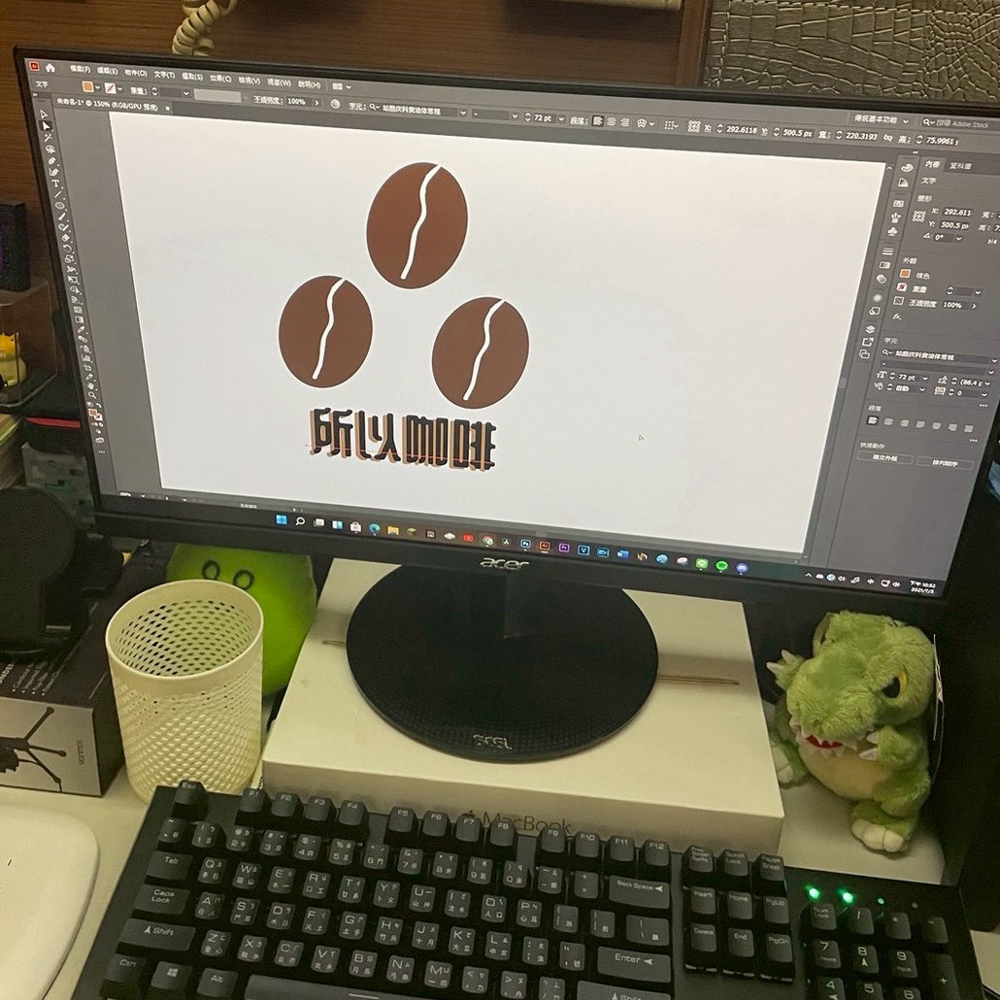
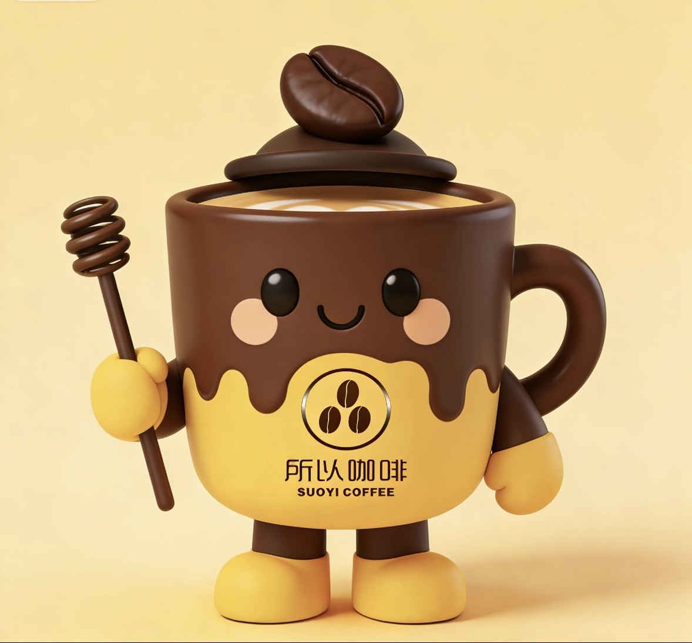
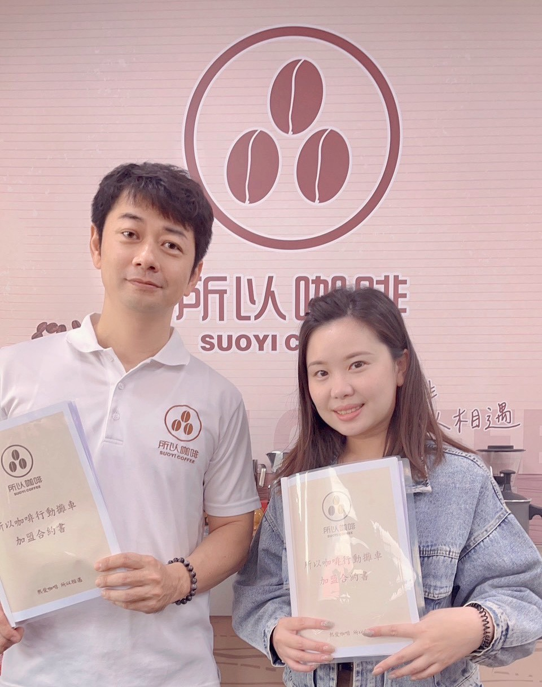

每天都值得一杯
能讓人放心的咖啡
這個品牌從一個簡單念頭誕生。
一杯日常喝得到的平價精品，是我們對咖啡最真誠的想像。
品牌故事：從街邊餐車到日常陪伴
Because every cup deserves trust.
在台灣，喝咖啡已經是生活的一部分。 晨間匆忙、午後疲憊、夜裡想安靜一下的時刻，人們期待一杯能陪伴日常的咖啡。 這杯咖啡不需要昂貴，也不該要等待太久，但一定要讓人感到踏實。
所以咖啡最初的樣子，是高雄仁武街邊的一台不鏽鋼餐車。 清晨的上班族、奔赴課堂的學生、或是剛收工的工友—— 他們在不同的時刻，卻因同一杯咖啡而停下腳步。 他們的時間都很珍貴，但仍願意選擇一杯能讓人安心的飲品。
「所以咖啡喝起來讓人放心。」
這並不是一句讚美，而是我們最重要的信念。 快速而不隨便，平價但不妥協，外帶也要能保留細緻風味。 這是我們對自己、也對每位客人的承諾。
從調整烘焙曲線、優化沖煮 SOP，到改善每一間店的外帶動線， 只為確保每一杯送到您手中的美式、拿鐵與特調， 都穩定、乾淨、帶著熟悉的香氣。 隨著門市逐漸增加，我們愈加確信自己提供的不只是咖啡， 而是一種值得信任的日常體驗。
我們相信所謂的平價奢華並不是口號， 而是一種讓更多人都能負擔得起的美好。 每個人都值得喝到品質穩定、帶溫度、令人放心的咖啡。 這也是所以咖啡存在的原因。
每一位停下腳步走到我們窗口的客人，都是這段故事的一部分。
無論何時，只要您願意靠近，我們都希望用一杯熟悉的香氣，
陪您重新找到步調。

移動的精品咖啡館
從第一天開始，我們就不想讓這台餐車只是販售飲料的地方。義式咖啡機、穩定的水質系統與完整的製程標準全都裝進這個小小空間裡。只為證明平價也能有品質，外帶也能很講究。
那段在騎樓下度過的時光，讓我們更確信咖啡的力量。它不是商品，而是一種日常的陪伴。

三顆豆子的安定力量
Logo 的三顆咖啡豆象徵穩定、循環與分享。它代表我們對品質的堅持，也代表著顧客與品牌之間的信任。
-
穩定結構
三點成面，象徵永不偏離的品質與初衷。 -
正向循環
熱愛、分享、相遇，是我們與客人共同完成的旅程。
「熱愛咖啡，所以相遇」
我們不賣難以親近的精品，而是讓大家每天負擔得起的平價奢華。 從高雄到全台，做一杯讓人願意每天都回來喝的咖啡。

遇見所咪：懂您的陪伴
所咪，出生在 2021 年 11 月 18 日。那天清晨，第一杯咖啡剛煮好，蒸氣升起的瞬間，所咪就在杯子裡誕生了。
他不是英雄，也不是什麼了不起的角色。他只是一個懂得陪伴的小傢伙。
「您已經很努力了，先喝一口再走。」
所咪發現，來買咖啡的人臉上不一定有笑容，但每個人手裡那杯咖啡，都握得很用力。 有人為了上班撐精神，有人為了創業咬著牙，也有人只是想在混亂的生活裡，偷一個五分鐘的安靜。
所以所咪決定站在櫃檯前，每天微笑、每天等客人。他手上拿的不是魔法棒，是攪拌棒——因為生活不需要奇蹟，只需要被好好攪拌過的溫度。
穩健成長，值得信賴
從街邊餐車到城市日常，我們的腳步穩而踏實。
2021 起源
高雄仁武仁雄路，不鏽鋼餐車正式營運。
2022 扎根
第一間實體店面開幕。建立穩定製程。
2023 拓展
新興林森店、左營富國店陸續展店。
2024 展望
完整加盟體系上線，南台灣全面佈局。
2025 拓展
楠梓新店開幕，北高雄生活圈再擴大。
